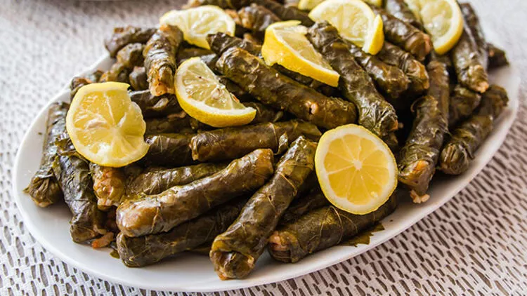

Yaprak Sarma

Description
Yaprk sarma is a traditional Turkish dish prepared by rolling minced meat or rice fillings in grape leaves. They’re often referred to as sarma and are among the few unique cuisines that both vegetarians and meatatarians can share. The vegan yaprak sarma recipe uses cooked rice and spices such as fresh parsley, pepper paste, and lemon seasoning instead of minced meat. This makes it equally delicious.
Ingredients
- 1 jar pickled vine leaves
- 250 g rice Baldo or Arborio
- 1 pc onion peeled and finely chopped
- 30 g black currants
- 30 g pine nuts
- A few stems fresh parsley chopped
- A few stems fresh dill chopped
- A few stems fresh mint chopped
- 3 tablespoons Olive oil
- 1 pcs lemon
- 1 tablespoon Salt
- A pinch Black pepper
Steps
- In a frying pan heat the oil and briefly sauté the onion until it becomes translucent.
- Add the rice, which you have previously washed and drained, and pour over 150 ml of water. Simmer over low heat until water begins to evaporate. Now add pine nuts, black currants, mint, parsley, dill, salt, and black pepper and all simmer for a few minutes. Remove from heat and set aside to cool.
- While the stuffing is cooling, prepare the leaves by washing them well in cold water. Separate the thicker and larger pieces of leaves and cover the bottom of the larger pot in which you will cook the sarma.
- Now wrap the stuffing in grape leaves as shown in the pictures. The goal is to get thin and long rolls.
- Arrange the sarma in a pot next to each other. To avoid opening, cover them with the rest of the leaves. Add one lemon sliced, pour over two tablespoons of olive oil and pour boiling water over everything so that the sarma is topped with water. Put on low heat to cook for 40-45 minutes.
- That's it. Yaprak sarma is done. Serve it cold as a starter or side dish, with the addition of yoghurt.